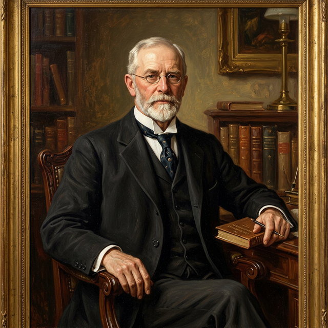
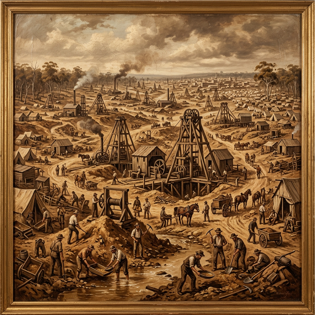
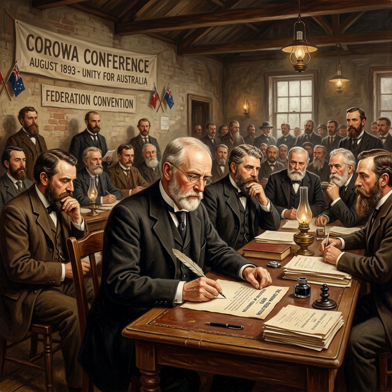
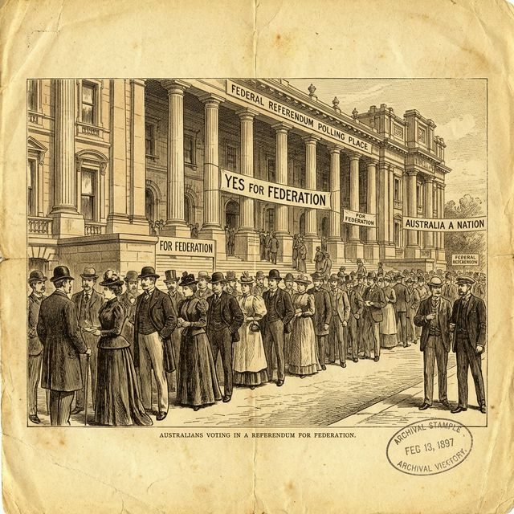

Sir John Quick was the man who figured out how to let the people decide if Australia should become a nation. He believed that the rules of our country should be chosen by everyone.
John Quick was born in England in 1852. When he was just two years old, his family moved to Australia. They were emigrants coming to find gold in the Bendigo goldfields. But sadly, just after they arrived, John's father died of a fever.
John had to leave school when he was only 10 years old to work in the gold mines to help his mother. He had to feed the heavy machines and work very hard while other boys were playing. He was a brave and hardworking boy!
John didn't let his hard work stop him from learning. He got a job at a newspaper in Bendigo and taught himself shorthand (a quick way of writing). He studied every spare minute he had, even after long days in the mines.
He won a scholarship to the University of Melbourne and eventually became a barrister (a special type of lawyer). From a poor boy in the mines to a highly educated lawyer, John Quick was truly a self-made success!

In 1893, the plan to unite the colonies was stuck. The politicians couldn't agree on anything! At a big meeting in the town of Corowa, John Quick came up with a brilliant resolution (a formal plan).
He suggested that instead of politicians deciding, the people of Australia should vote for representatives to write the rules. Then, the people should vote again to decide if they liked the rules! This was called a referendum. It was the key that unlocked the door to Federation.

John Quick was chosen as one of the leaders to draft the Australian Constitution. He worked very hard to make sure the rules were fair for everyone. He was a master of the law and knew exactly how to make the new government work properly.
Right as Federation started in 1901, he published a massive book that explained every single rule in our Constitution. Even today, over 100 years later, lawyers still use John Quick's book to understand how our country should be run!

Because he did such amazing work for Australia, John Quick was knighted on January 1, 1901. He became Sir John Quick. He served in the first Australian Parliament for many years as the member for Bendigo.
He was a man who believed that everyone deserved a fair go and that the people should always have a voice. He passed away in 1932, but his brilliant idea for the referendum is still used today every time we want to change our Constitution.
Click the dates to see how John Quick built the foundations of our nation.
Born in Cornwall, England.
Leaves school at 10 to work in the Bendigo mines.
Becomes a barrister (lawyer) after years of self-study.
Invented the referendum system at the Corowa Conference.
Is Knighted on the very first day of Federation.
Dies in Melbourne, aged 80.
Visit our detailed biography page for in-depth information, including comprehensive life history and academic references.
Detailed biography with sources and references